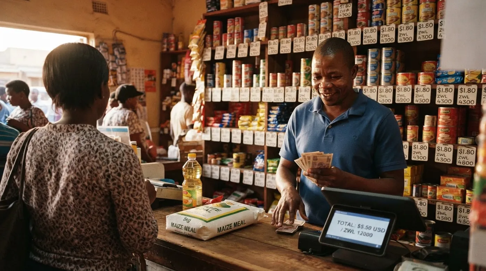

Selling in ZiG and US dollars: what a Zimbabwean shop needs from its till
A customer buys three items, hands you a twenty dollar note, and you owe them change you do not have in the right currency. You do the sum in your head at a rate you half remember, give back a mix of ZiG and coins, write something on the back of a receipt, and move on because there are four people waiting. Multiply that by ninety customers and you have the reason your cash never balances at closing. Trading in two currencies is not an accounting problem. It is a counter problem, and it needs to be solved at the counter.

The rate, and where it comes from
Zimbabwe has traded in more than one currency for years, and since the ZiG arrived in April 2024 the pairing that matters for most shops is ZiG against the US dollar. The Reserve Bank of Zimbabwe publishes rates every working day. To give you a sense of scale rather than a number to reuse: on 14 August 2026 the published USD to ZWG average sat at 26.5673, with a bid of 25.9031 and an ask of 27.2315. By the time you read this it will have moved, which is exactly the point.
Whether you may price above the official rate, and by how much, has been the most contested question in Zimbabwean retail since the ZiG launched. Formal retailers have argued publicly and repeatedly that being held to the official rate while suppliers price differently squeezes them against informal traders who face no such constraint. Statutory instruments on the subject have been introduced and later repealed. We are not going to tell you where the line sits today, because it moves and because getting it wrong is expensive. Ask your accountant.
What your till owes you is narrower and does not depend on the policy debate. It has to hold a rate you set, apply that same rate to every transaction until you change it, and record on each sale which rate was used. Software that lets each cashier convert in their head is not a dual-currency system. It is a single-currency system with extra arguments.
Split payments: the feature everyone skips
Here is the test that separates a till that genuinely handles two currencies from one that merely displays them. Ring up a sale. Take part of it in US dollars and the rest in ZiG, on the same receipt. Can the system do it, convert at your stored rate, and record both parts separately?
A surprising number cannot. They will let you choose a currency for the sale, which is not the same thing at all. And the moment your system forces one currency per transaction, half of every mixed payment migrates to a notebook, and everything downstream, your stock value, your margins, your day-end, quietly stops being true.
Three more things worth demanding in a demo, in this order:
- A price shown in both currencies on screen and on the receipt, so the customer sees the conversion rather than trusting it.
- Change calculated in whichever currency you have, at the same stored rate, without mental arithmetic.
- A record of the rate applied attached to the sale itself, so a dispute three weeks later has an answer.
The change problem, and the honest fix
Small denominations are the daily headache. You have twenties and no ones, or ZiG notes and a customer who paid in dollars. Shops across the region have improvised the same three answers for years: give change in the other currency, round the amount, or promise it next time.
The first two are fine as long as they pass through the till at your stored rate, so the conversion is recorded rather than absorbed. The third is where money disappears. A balance owed to a customer, scribbled on a receipt or remembered by one member of staff, is a liability you cannot see and cannot count.
The clean version of the same practice is a customer credit feature: the balance is recorded against that person's name, they can see it, you can see it, and it draws them back. This is the same mechanism shops elsewhere use for buying on account, and we cover the discipline around it in our guide to customer tabs and staff discount limits. In a two-currency shop it has a second job: it absorbs the change you cannot physically give, without either of you losing out.
Change you owe and never recorded is not a rounding error. It is an unpriced loan from your customer, and you will repay it in goodwill.
Why your day-end stops balancing
Almost every shop that starts taking two currencies watches its closing count drift. The causes are usually the same three, and none of them is theft.
First, conversions happen at slightly different rates through the day because they happen in people's heads. Second, change given across currencies never gets recorded as a conversion, so the cash moves between drawers without a trace. Third, closing is done on one converted total rather than a separate count per currency, which hides the drift instead of exposing it.
The fix is procedural more than technical. Set the rate in one place, at one time of day. Force every conversion through the till. Count each currency separately at close, and compare each against what the system says it should be. If a gap appears, you now know which currency it is in, which is most of the work of finding it.
Where fiscalisation fits
This is separate from the currency question and you should not let a vendor blur the two. ZIMRA states that all VAT-registered operators must fiscalise as outlined in SI 104 of 2010, and that all taxpayers are required to fiscalise in terms of Section 90 of the Income Tax Act [CAP 23:06], including those below the USD 25,000 VAT registration threshold. Fiscal devices record and transmit sales and other tax information at the time of sale to the ZIMRA servers, and hold that information in memory that cannot be altered afterwards.
So the practical question when you shortlist software is blunt: does this product have working fiscal device integration in Zimbabwe today, with a shop you can call? A general statement about being ready for electronic invoicing is not an answer to that question, and treating it as one is how businesses end up buying twice. Several vendors in the Zimbabwean market specialise in exactly this integration, and if fiscalisation is your binding constraint, that is where to start your shortlist rather than with features.
Power cuts and the offline question
Load shedding decides more about your choice of till than any feature list. A cloud system that stops selling when the connection drops is not usable here, and most vendors know it, so almost everyone advertises an offline mode.
The gap is in what offline actually covers. Selling offline is common. Being able to look up stock levels, apply your stored exchange rate, take a split payment and check a customer's balance while offline is much less common, and those are exactly the things you need when the power is out and the shop is busy. Test it rather than reading about it: switch off data and Wi-Fi, then try a two-currency sale with a stock lookup and a customer balance check. Our guide to running a POS through power cuts goes through the full checklist.
What to look for, and who does it
Broadly you are choosing between fiscalisation-first local vendors, general cloud tills, and systems built around multi-currency trading. Most shops in Zimbabwe end up needing something from at least two of those columns, so be clear with yourself about which constraint binds hardest before you shortlist.
digabloPos
On the trading side it covers what this article describes: multi-currency with a built-in converter and an exchange rate set per establishment, so the rate lives in one place instead of in five heads. It records each payment method separately, handles customer credit for balances you cannot settle in cash, works fully offline with no feature switched off and syncs when the power and network return, and offers per-employee permissions including a cap on discounts. It imposes no payment commission and no payment processor, so you stay free to take cash, card or mobile money and keep whatever cost advantage each one gives you. The base plan is free, and pricing tiers change, so check the current offer.
Be clear-eyed about the limit. digabloPos describes itself as ready for electronic invoicing and holds a fiscal certification in France only. It advertises no ZIMRA fiscal device accreditation. If fiscalisation is a live obligation for you, ask the vendor directly what integration exists in Zimbabwe before you commit, and treat the answer as decisive.
👍 Strengths
- Multi-currency with your own rate, held in one place
- Customer credit, which absorbs change you cannot give
- Full offline mode, stock and balances included
- No forced commission on how you get paid
- Discount caps and PIN access per employee
👎 Check for yourself
- No ZIMRA fiscal device accreditation is claimed, confirm before buying
- Young brand in Zimbabwe, ask for a live demo
- Modules beyond the core till are paid
Zimbabwean fiscalisation-first vendors
Several vendors serving the Zimbabwean market lead with ZIMRA integration and fiscal device support, and market dual-currency handling alongside it. If you are VAT registered and behind on fiscalisation, that combination solves your most urgent problem first, and it is a legitimate reason to start there.
What to pin down in the demo: how the exchange rate is set and who can change it, whether split payments across currencies work on one receipt, what survives a power cut, and the total annual cost once the device, the gateway and any per-branch fees are added.
👍 Strengths
- Fiscal device integration is their core business
- Local support that understands current ZIMRA practice
👎 Check for yourself
- Split tender and offline depth vary, have them demonstrated
- Total cost with device and gateway needs pinning down
A general cloud POS
International cloud tills are cheap, well built and easy to learn, and many run offline. They are a reasonable base if your shop is small and mostly single-currency in practice. The thing to check before committing is how deep the multi-currency support goes: displaying a second currency is common, storing your own rate and settling one sale across two currencies is less so. And fiscal device integration for Zimbabwe is a separate question you will have to answer anyway.
👍 Strengths
- Low cost, mature and quick to set up
- Offline selling is widely supported
👎 Limits
- Depth of dual-currency handling varies, test split payments
- Local fiscalisation still to be solved separately
Try a two-currency sale before you decide
Ring up one item, pay half in USD and half in ZiG, then check the receipt shows both and the rate used.
Try digabloPos freeAt a glance
| What a two-currency shop needs | digabloPos | Fiscalisation-first | General POS |
|---|---|---|---|
| Your own rate, stored centrally | Yes | Usually | Varies |
| Split payment across two currencies | Yes | Ask for a demo | Ask for a demo |
| Customer credit for unpaid change | Yes | Varies | Varies |
| Full offline, stock and balances included | Yes | Varies | Selling only, often |
| ZIMRA fiscal device integration | Not claimed | Core offer | Ask |
| Forced payment commission | None | Varies | Varies |
Compiled from public vendor documentation reviewed in August 2026 and features confirmed by the vendors. "Ask for a demo" does not mean absent: it means we could not confirm it publicly and you should have it shown to you on your own stock before deciding.
Frequently asked questions
Which exchange rate am I supposed to use in my shop?
The Reserve Bank of Zimbabwe publishes an official rate every working day, and that is the reference point for tax and reporting. Whether and how far you may depart from it in your own pricing has been the subject of repeated statutory changes, so this is one to confirm with your accountant or ZIMRA rather than with a neighbour. What matters for your till is simply that it can hold a rate, apply it consistently and show which rate was used on each sale.
How do I record a sale paid partly in USD and partly in ZiG?
You need a till that accepts a split tender across currencies on the same receipt, converts at your stored rate and records each part separately. If your system forces you to pick one currency per sale, the second half of the payment ends up in a notebook, and your day-end will not balance. Ask any vendor to demonstrate a split payment before you buy.
What do I do when I cannot give change in the right currency?
Shops handle it in three ways: give change in the other currency at your rate, round the sale, or record the balance as credit to the customer for their next visit. All three are workable, but only the third stops arguments, and only if it is written into the system against that customer's name rather than on a scrap of paper. A till with a customer credit feature turns an awkward moment into a reason to come back.
Do I still have to fiscalise if I am a small shop?
ZIMRA states that VAT-registered operators must fiscalise under SI 104 of 2010, and that all taxpayers are required to fiscalise in terms of Section 90 of the Income Tax Act [CAP 23:06], including those below the USD 25,000 VAT registration threshold. Fiscal devices record and transmit sales and other tax information to ZIMRA servers at the time of sale. Confirm your own position with ZIMRA, because thresholds and deadlines move.
Can any POS system just be plugged into a fiscal device?
No, and this is the question to settle first. Fiscal device integration is a specific piece of work between your software and an approved device or gateway. Ask the vendor directly whether they have it working in Zimbabwe today, ask for a reference site, and do not accept a general claim about being ready for e-invoicing as an answer.
Why does my day-end never balance since we started taking two currencies?
Usually because conversions are happening in someone's head at slightly different rates through the day, and because change given in the other currency is not recorded as a conversion at all. Fix the rate in one place, make every conversion pass through the till, and close the day with a separate cash count per currency rather than one converted total.
One rate, one till, two currencies
Stop converting in your head. Set the rate once and let every sale, every payment and every balance use it.
Set up a free tillOfficial sources
Currency and tax rules in Zimbabwe move quickly. Check them at source rather than taking our word for it.
- Reserve Bank of Zimbabwe: daily published exchange rates and monetary policy statements.
- ZIMRA, fiscalisation explained: who must fiscalise, what a fiscal device records and how the information reaches ZIMRA.